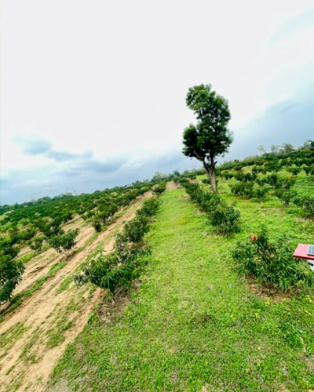
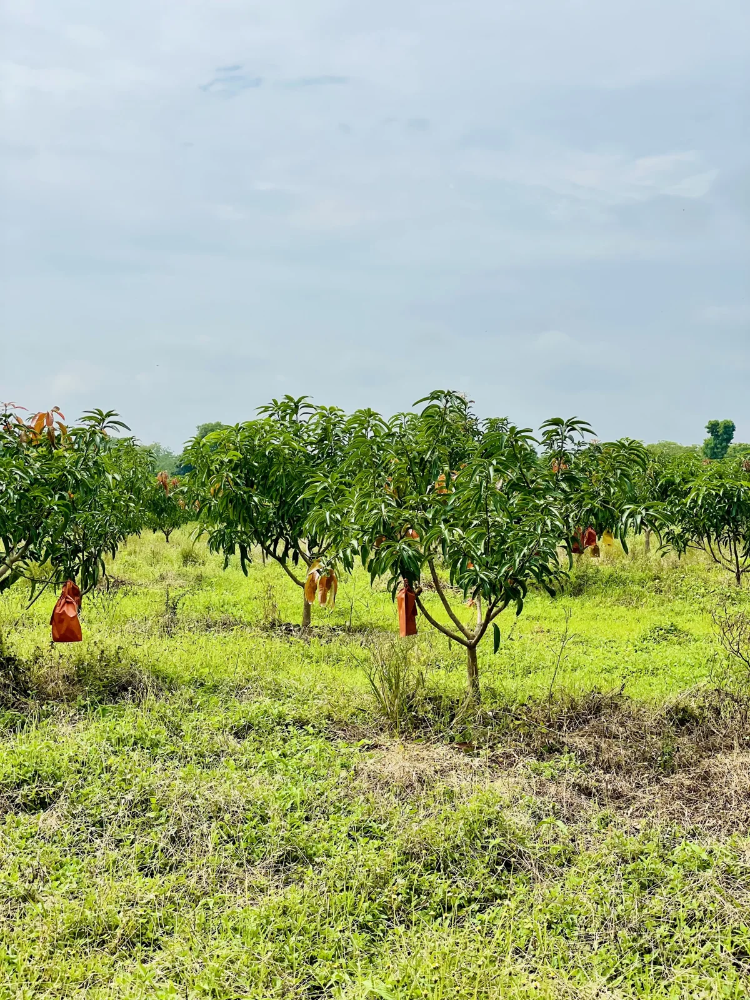

OUR FARM & GALLERY
Our Farm &
Gallery
A closer look at our farms, cultivation practices
and the fresh produce we grow.
ABOUT OUR FARM
Sustainable Farming
for Quality Produce
Located in Thanamalwila, Sri Lanka, our 100+ acre plantation is dedicated to cultivating high-quality, naturally grown fruits with care and responsible farming practices.
Our Farming Approach
We nurture our fruit trees through regular care and monitoring, select produce carefully at harvest, and prepare each crop for supply. Contact our team to learn more about our cultivation practices.

OUR GALLERY
Life at Green Techno Farm
Explore our farms, cultivation practices and the journey of our fresh produce from farm to fruit.
Showing all 7 photos
Visit Our Farm or Explore More
Connect with our team to discuss a visit and discover our farming practices firsthand.